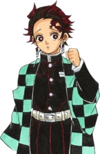

Kimetsu no Yaiba: Бесконечный поезд — полнометражный фильм, основанный на арке Бесконечного поезда. Фильм является прямым продолжением аниме-сериала и был выпущен 16 октября 2020 г.
10 октября 2021 стартовал второй сезон Kimetsu no Yaiba, продолжение первого сезона с вырезанными сценами из полнометражного фильма.
Танджиро Камадо - молодой мальчик, который продаёт древесный уголь, чтобы зарабатывать на жизнь для своей семьи. В один роковой день вся его семья, кроме его сестры, была убита демоном, ввергнув его в мир страха и отчаяния. После встречи с убивающим демона мечником, Танджиро и его сестра, которая теперь сама является демоном, должны найти способ покончить с проклятием и выследить монстра, который убил их семью.
